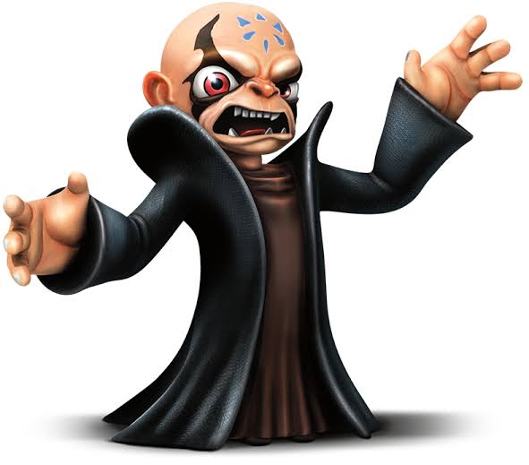

VIKTIG INFORMATION OM FOTOSENSITIVITET & SÄKERHET
Flynn asks: "Which language shall we use to defend the Dread-Yacht?"
Flynn frågar: "Vilket språk ska vi flyga med?"
Kaos har skickat sin luftarmada för att sänka Cap'n Flynns stolthet – flaggskeppet Dread-Yacht. Ditt uppdrag är att bemanna däckets dubbelkanoner och skjuta ner alla fientliga spökskepp, luftminor och artillerigranater innan skeppets skrov kollapsar till 0%.
Visar Dread-Yachtens hållbarhet i procent (100% – 0%). När fiender eller minor kolliderar med skeppet tar du direkt skada:
Varje avfyrat skott med dubbelpipan alstrar extrem friktion och ånga i eldrören:
Spelet är utsmyckat med säsongsbetonade Halloween-överraskningar. Kaos har ingått en pakt med himlahäxorna som kastar lila giftklot mot skrovet, teleporterar sig i skyn och utlöser plötsliga häx-jumpscares ackompanjerade av skärande ljud. Dessa effekter är permanenta för att bevara spelets spöklika arkadatmosfär.

KLARGÖR DREAD-YACHTENS KANONER...
FÖRSVARA KAPSYL-FLYNN OCH SKEPPET I SKYLÄNDERNA!
Ondskefulla Spökskepp, luftminor och Kaos flygande artilleri svärmar runt Dread-Yachten! Bemannad däckskanonen och rädda skeppet innan skrovet kollapsar.
💡 Tips: Få över 3000 poäng i en omgång för att låsa upp Hardcore-mardrömmen!
💡 Vissa spöken tål inte höga vrål! Aktivera micken och skrik för att krossa deras ljudsköldar.
Flynn tar en kaffepaus i styrhytten!
Dread-Yachten träffades för hårt av Kaos krafter.
Håll upp din fysiska Crew-bricka eller arrangörs-QR framför linsen.